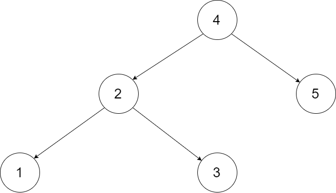
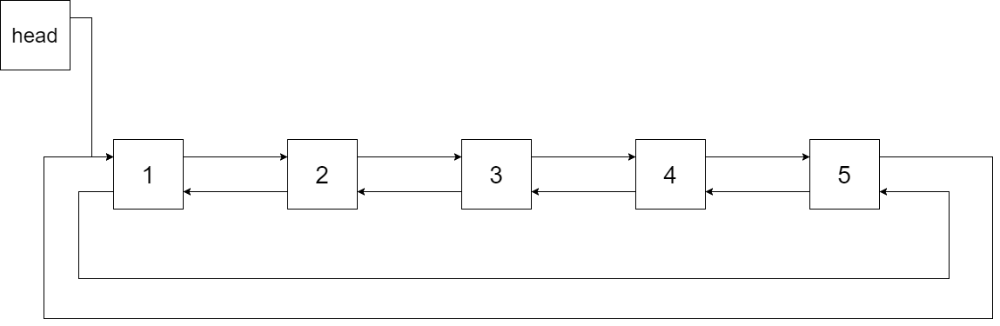

28、剑指 Offer 36. 二叉搜索树与双向链表
目录
一、题目
输入一棵二叉搜索树，将该二叉搜索树转换成一个排序的循环双向链表。要求不能创建任何新的节点，只能调整树中节点指针的指向。
为了让您更好地理解问题，以下面的二叉搜索树为例：
{kind=link}
我们希望将这个二叉搜索树转化为双向循环链表。链表中的每个节点都有一个前驱和后继指针。对于双向循环链表，第一个节点的前驱是最后一个节点，最后一个节点的后继是第一个节点。
下图展示了上面的二叉搜索树转化成的链表。“head” 表示指向链表中有最小元素的节点。
{kind=link}
特别地，我们希望可以就地完成转换操作。当转化完成以后，树中节点的左指针需要指向前驱，树中节点的右指针需要指向后继。还需要返回链表中的第一个节点的指针。
注意：本题与主站 426 题相同：https://leetcode-cn.com/problems/convert-binary-search-tree-to-sorted-doubly-linked-list/
注意：此题对比原题有改动。
二、解法
2.1、中序遍历
核心思路
本文解法基于性质：二叉搜索树的中序遍历为 递增序列 。 将 二叉搜索树 转换成一个 “排序的循环双向链表” ，其中包含三个要素：
- 排序链表： 节点应从小到大排序，因此应使用 中序遍历 “从小到大”访问树的节点。
- 双向链表： 在构建相邻节点的引用关系时，设前驱节点 pre 和当前节点 cur ，不仅应构建 pre.right = cur ，也应构建 cur.left = pre 。
- 循环链表： 设链表头节点
head和尾节点tail，则应构建head.left = tail和tail.right = head。
{kind=link}
中序遍历 为对二叉树作 “左、根、右” 顺序遍历，递归实现如下：
// 打印中序遍历
void dfs(Node root) {
if(root == null) return;
dfs(root.left); // 左
System.out.println(root.val); // 根
dfs(root.right); // 右
}
根据以上分析，考虑使用中序遍历访问树的各节点 cur ；并在访问每个节点时构建 cur 和前驱节点 pre 的引用指向；中序遍历完成后，最后构建头节点和尾节点的引用指向即可。
算法流程
dfs(cur): 递归法中序遍历：
- 终止条件： 当节点 cur 为空，代表越过叶节点，直接返回；
- 递归左子树，即 dfs(cur.left) ；
- 构建链表：
- 当 pre 为空时： 代表正在访问链表头节点，记为 head ；
- 当 pre 不为空时： 修改双向节点引用，即 pre.right = cur ， cur.left = pre ；
- 保存 cur ： 更新 pre = cur ，即节点 cur 是后继节点的 pre ；
- 递归右子树，即 dfs(cur.right) ；
treeToDoublyList(root)：
- 特例处理： 若节点 root 为空，则直接返回；
- 初始化： 空节点 pre ；
- 转化为双向链表： 调用 dfs(root) ；
- 构建循环链表： 中序遍历完成后，head 指向头节点， pre 指向尾节点，因此修改 head 和 pre 的双向节点引用即可；
- 返回值： 返回链表的头节点 head 即可；
复杂度分析
时间复杂度：O(N)，N 为二叉树的节点数，中序遍历需要访问所有节点。
空间复杂度：O(N)，最差情况下，即树退化为链表时，递归深度达到 N，系统使用 O(N) 栈空间。
Code
class Solution {
Node pre, head;
public Node treeToDoublyList(Node root) {
if (root == null) {
return null;
}
// 中序遍历, 构建双向链表
dfs(root);
// 此时中序遍历已经完成, head 指向头节点, pre 指向尾节点
// 下面进行头节点和尾节点的相互指向, 这两句的顺序也是可以颠倒的,
// 将头结点的 left 指向尾结点
head.left = pre;
// 将尾结点的 right 指向头结点
pre.right = head;
return head;
}
void dfs(Node cur) {
// 终止条件：当节点 cur 为空，代表越过叶节点
if (cur == null) {
// 直接返回
return;
}
// 递归左子树
dfs(cur.left);
// 构建链表
if (pre != null) {
// 当 pre 不为空时：修改双向节点引用
pre.right = cur;
} else {
// 当 pre 为空时, 代表正在访问链表头节点
head = cur;
}
cur.left = pre;
// 保存 cur ： 更新 pre = cur ，即节点 cur 是后继节点的 pre
pre = cur;
// 递归右子树
dfs(cur.right);
}
}